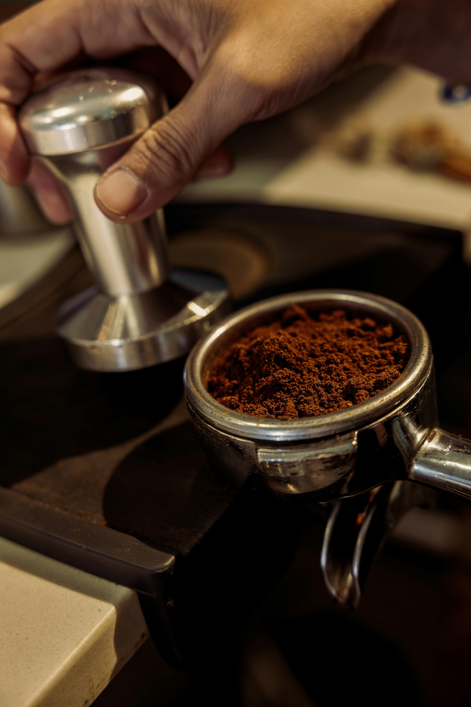
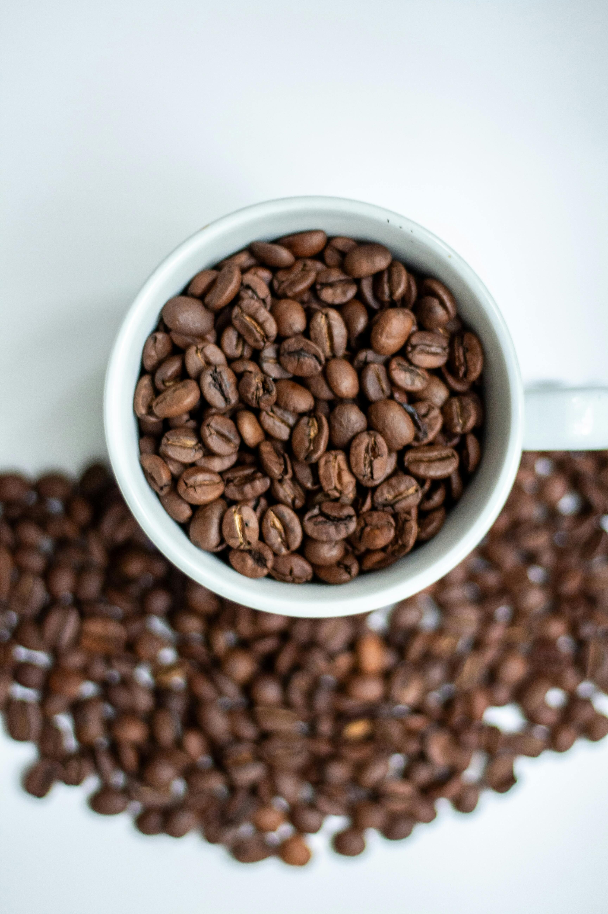
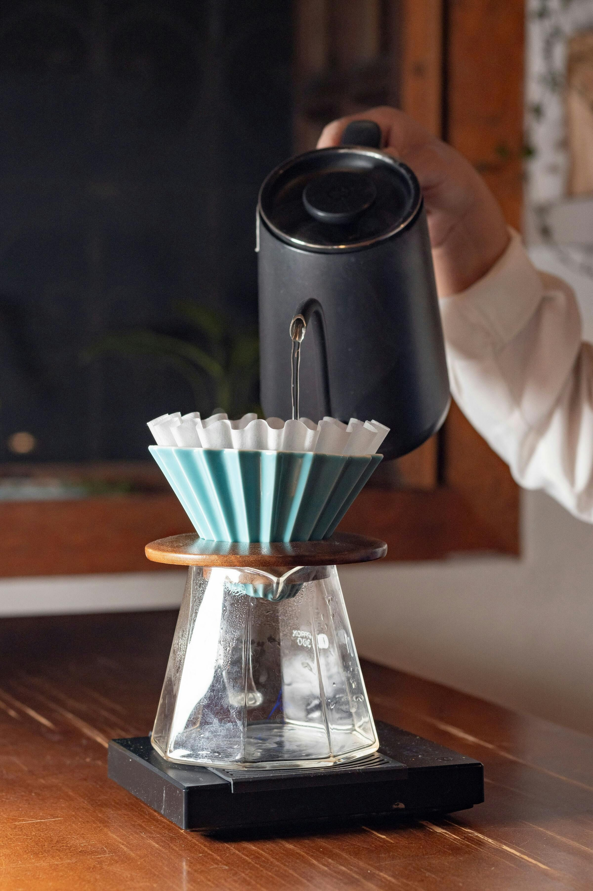

Café Molido
Café orgánico molido, ideal para preparar una taza con aroma intenso y sabor balanceado.
₡4,500
Café Brumas del Valle es una empresa dedicada a la producción y venta de café orgánico costarricense, comprometida con la calidad del producto, el respeto por el ambiente y la tradición cafetalera del país.
Producir y comercializar café orgánico de alta calidad, ofreciendo una experiencia auténtica que refleje el esfuerzo de nuestros productores y el valor de la agricultura sostenible.

Café orgánico molido, ideal para preparar una taza con aroma intenso y sabor balanceado.
₡4,500

Presentación en grano para quienes disfrutan moler su café y conservar su frescura natural.
₡5,200

Selección premium de café de altura con perfil suave, ideal para ocasiones especiales.
₡6,100
Aprende a preparar una bebida refrescante con café, hielo y un toque dulce para los días calurosos.
Descubre cómo el café forma parte de la historia, la economía y la identidad de Costa Rica.
Conoce recomendaciones básicas sobre molienda, agua y temperatura para mejorar cada taza.